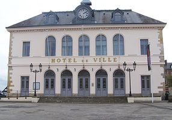
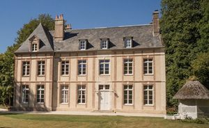
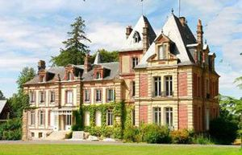
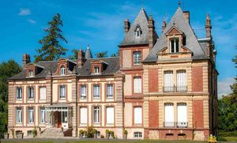
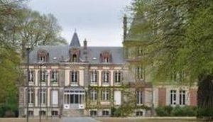
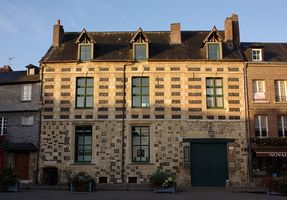
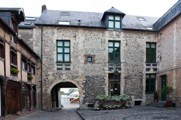
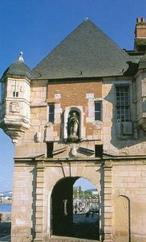

Recensement Jean-Claude Truffet
| Département | 14 — Calvados |
| Canton | Honfleur-Deauville |
| Commune | Honfleur |
| Type d'édifice | Château |
| Période d'origine | XV-XVII-XIX |
| Coordonnées GPS | 49° 25' 15" Nord, 0° 13' 58" Est Preteville grav-3-4-5 GPS : 49° 23' 01" Nord, 0° 14' 39" Est |








Trois châteaux à Honfleur dont Honfleur, Gonnevielle,Preteville et Roncheville et l'hotel de ville. HONFLEUR, sa construction date du 2e quart du XIXe siècle. A la fin de l'Ancien Régime, les ingénieurs en charge des travaux de restauration de la commune envisagèrent de rebâtir, à l'extrémité Est du vieux bassin, le vieil édifice que l'on nommait « maison de ville » alors fortement dégradé. La mise en oeuvre du projet fut retardé, en raison des évènements de la Révolution. Il faudra attendre 1830 pour que les plans d'un nouvel hôtel de ville, conçus par l'architecte Fontaine, soient entérinés. Les travaux furent achevés, en 1837, sous la direction de l'architecte Hagron. L'Hôtel de Ville de Honfleur constitue un exemple représentatif de l'architecture publique de la monarchie de Juillet. Il s'agit d'une construction massive, avec 2 niveaux d'élévation, d'une grande sobriété. L'escalier suscite un intérêt certain avec sa volée droite à repos et la galerie qui l'entoure soutenue par 8 colonnes d'ordre dorique. L'Hôtel de Ville de Honfleur est la propriété de la commune de Honfleur. Les éléments protégés aux M.H. sont les façades et toitures, le vestibule et la cage d'escalier, la galerie et la salle du Conseil, au 1er étage, avec son décor, depuis le 27/12/1989. GONNEVILLE Le petit château du XVIIIe siècle a été restauré avec amour par ses propriétaires Anna et Philipp pour ouvrir sous lenseigne LE FLEUR, un refuge parfait pour votre séjour en Normandie. Votre séjour participera à la suite de la rénovation du château, de ses dépendances et son parc.
Le Château de PRETEVILLE est un château bâti à Gonneville-sur-Honfleur, au sud de Honfleur aujourd'hui résidence Odalys hôtel RONCHEVILLE, depuis 1206, jusqu'à l'occupation anglaise pendant la guerre de Cent Ans, le manoir de Roncheville, fut la maison seigneuriale des Bertran, barons de Bricquebecq, vicomtes de Faugernon et de Roncheville, seigneurs de Honfleur. À l'issue de la guerre, Charles VII fait du manoir de Roncheville la résidence des gouverneurs de Honfleur. Robert de Floques de 1450 à 1461, Jean de Montauban de 1461, Louis de Bourbon à 1470 à 1486. Fils bâtard de Charles Ier, duc de Bourbon, Louis de Bourbon, amiral de France, chevalier de l'ordre de Saint-Michel, chargé par Louis XI de relever les fortifications de Honfleur, reconstruit le manoir en 1470. Au cours des siècles, le manoir subit plusieurs transformations : au XVe siècle, l'étage originellement à pans de bois est reconstruit en appareillage de briques et de silex, le bâtiment est allongé par un porche couvert, au XVIIe siècle, sont construits un grand escalier, ouvert sur la cour qui sera clos par la suite, un bâtiment en retour. Les façades et les toitures, ainsi que la cage d'escalier principale avec l'escalier et sa rampe en bois sont classés au titre des monuments historiques depuis le 13 septembre 1990 alors que le reste du manoir est inscrit depuis le 19 décembre 1985.
duc de Bourbon
"
Trois châteaux à Honfleur dont Honfleur grav-1 et 8 la porte de la lieutenance, Gonneville grav-2, Preteville grav-3-4-5 et Roncheville grav-6-7. Honfleur GPS : 49° 25' 15" Nord, 0° 13' 58" Est Preteville grav-3-4-5 GPS : 49° 23' 01" Nord, 0° 14' 39" Est